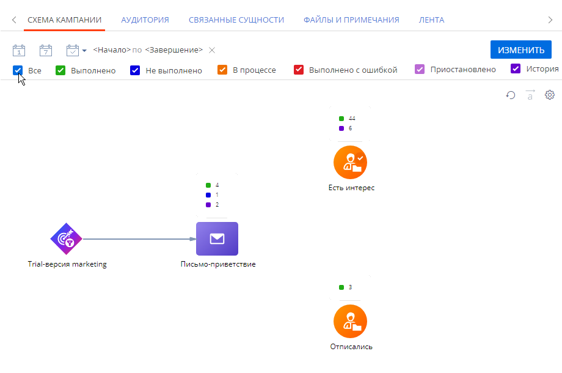

Представляем обзор изменений и улучшений, реализованных в Creatio версии 7.18.0.
Инструкция по обновлению для приложений on-site доступна в отдельной статье.
Видеообзор новинок релиза 7.18.0 >>>
Low-code платформа
Инструменты пользовательской настройки
Домашние страницы
-
Реализована функциональность домашних страниц. В домашних страницах собрана вся итоговая информация для пользователей Creatio. Домашняя страница отображается в боковой панели над разделами, доступными в рабочем месте.
Домашняя страница открывается из боковой панели, а также заменяет главную страницу приложения, если в нее ранее не вносились кастомизации.
Домашние страницы добавлены для всех преднастроенных рабочих мест — “Продажи”, “Маркетинг”, “Сервис” и т. п.
Вы можете редактировать наполнение страниц с помощью no-code инструментов, используя широкие возможности кастомизации.
Переход к редактированию домашней страницыТакже вы можете создавать новые домашние страницы при настройке рабочих мест.
Создание домашней страницы для рабочего местаДизайнер домашних страниц
- Реализован новый пользовательский инструмент для настройки домашних страниц с помощью no-code инструментов. Дизайнер домашних страниц имеет интуитивный интерфейс и открывает широкие возможности кастомизации. Для удобства настройки элементы в дизайнере страниц выглядят так же, как на домашней странице.
Настройка домашней страницы
-
Появилась возможность гибко настраивать цветовую схему страницы. Палитра доступных цветов во всех дашбордах включает 16 оттенков. В графиках с несколькими сериями можно настраивать цвет заголовка и цвет серии отдельно. При наведении курсора на график подсказка отображается сразу для всех серий. Это позволяет визуально сравнивать серии между собой.
Настройка графика с несколькими сериями
Для заголовка графика добавлена возможность настройки стилей.
Настройка стиля для заголовков графика
Также реализованы различные варианты настройки стиля для дашборда “Показатель”.
Варианты заливки дашборда “Показатель” - Реализован график “Кольцевая диаграмма”. При наведении на любой из секторов диаграммы подсказка отображается в центре, что позволяет акцентировать внимание на значениях графика.
Кольцевая диаграмма
- Реализован новый пользовательский инструмент для настройки домашних страниц с помощью no-code инструментов. Дизайнер домашних страниц имеет интуитивный интерфейс и открывает широкие возможности кастомизации. Для удобства настройки элементы в дизайнере страниц выглядят так же, как на домашней странице.
Базовые возможности платформы
Пакетное прогнозирование данных
- Реализована возможность пакетного прогнозирования для решения задач классификации. Функциональность позволяет выполнять прогнозирование справочного поля для коллекции записей, например, можно определить категорию продажи на основании существующих закономерностей. Пакетное прогнозирование можно настроить с помощью элемента бизнес-процесса или на странице модели машинного обучения.
Настройка прогнозирования для коллекции записей

Проверка обучающей выборки
- Реализована предварительная проверка обучающей выборки, которая позволит быстрее настроить корректную работу модели машинного обучения. Теперь еще до запуска обучения можно получить детализированную информацию об ошибках в формировании выборки и способах их исправления для различных сценариев машинного обучения.
Результат проверки обучающей выборки
Отображение данных для прогнозирования
- При настройке моделей прогнозирования, использующих текстовые данные, теперь можно получить информацию о ТОП-20 слов и фраз, которые влияют на результат прогноза. Данная информация позволит понять принципы работы и результат прогнозирования моделей.
Информация о ТОП-20 слов и фраз, влияющих на результат обучения
Интеграции
Веб-сервисы
- Реализована возможность исследовать веб-сервис, протестировать его работоспособность и выполнить отладку в ходе настройки. Можно отправить запрос и получить ответ напрямую из интерфейса настройки веб-сервиса без необходимости настраивать и запускать бизнес-процесс. Подробнее: Настроить интеграцию с веб-сервисом REST, Настроить интеграцию с веб-сервисом SOAP.
Тестирование веб-сервиса
Администрирование
Аутентификация
- Упрощена аутентификация пользователей в Creatio. Теперь в систему можно войти как по имени пользователя, так и по email-адресу. Для настройки входа по email-адресу необходимо на страницах пользователей заполнить поле Email. Настройка выполняется системным администратором.
Лицензирование
-
Перед обновлением приложения на версию 7.18.0 для Creatio on-site необходимо заказать лицензии. Заказ лицензий доступен в менеджере лицензий.
Выданные лицензии действительны для указанной при заказе версии и ниже, что позволит упростить процедуру обновления. Подробнее: Лицензировать Creatio.
Логирование
- При настройке журнала изменений появилась возможность множественного выбора колонок. Теперь можно быстрее настраивать логирование необходимых данных.
Множественный выбор колонок для логирования
Поддержка Redis Cluster
- Реализована поддержка Redis Cluster. Это более современный механизм обеспечения отказоустойчивости хранилищ Redis, который позволяет минимизировать время простоя системы в случае аварийной ситуации в подсистеме Redis, а также обеспечивает высокую производительность. Поддержка устаревшей отказоустойчивой конфигурации Redis Sentinel будет прекращена в версии 7.18.3. Перед обновлением на эту версию необходимо будет установить и настроить Redis Cluster. Подробнее: Настроить Redis Cluster.
Безопасность
Защита паролей
- Для обеспечения максимального уровня защиты реализовано безопасное хранение паролей для мобильных устройств на платформах iOS и Android. Пароли хранятся внутри защищенных хранилищ не только в случае использования Single Sign-On (SSO), но и при использовании стандартной аутентификации.
Инструменты разработки
Работа с данными
- Улучшен механизм привязки данных к пакету. Теперь при выборе объекта привязки добавляются все доступные поля данного объекта с учетом пакета. Исключением являются те поля, у которых установлен режим использования “Никогда”.
CRM-решения
Инструменты маркетинга
Расписание доставки рассылок
-
Появилась возможность отправлять рассылку по заданному расписанию. Настройки задаются в параметрах рассылки. Вы можете выбрать:
- Режим отправки: ежедневно или в определенные дни недели.
- Время доставки писем, например, с 09:00 до 18:00.
- Часовой пояс для времени доставки писем.
Подробнее: Настроить время доставки рассылки.
Настройка расписания отправки
Приоритет отправки рассылок
-
Добавлена возможность выбирать приоритет отправки рассылки. Например, можно настроить приоритет рассылок таким образом, чтобы сначала отправлялись письма с подтверждением регистрации, а затем новостные дайджесты.
Подробнее: Настроить приоритет рассылки.
Настройка приоритета отправки
Распределение отправки по времени
-
Реализована постепенная отправка писем (троттлинг), что дает возможность “прогреть” холодную аудиторию и улучшить репутацию домена отправителя. Троттлинг предполагает разделение крупной рассылки на несколько частей, которые будут передаваться почтовому провайдеру поочередно в течение заданного периода времени. Такой подход позволит улучшить показатели доставляемости рассылок и избежать попадания писем в папку “Спам” или отклонения их почтовыми сервисами.
Для сегментации разных баз холодных контактов и отдельного прогрева каждой вы можете настроить несколько очередей отправки рассылок.
Подробнее: Настроить распределение отправки рассылки (троттлинг).
Настройка режима отправки по времени
Срок действия рассылки
-
Добавлена возможность задать дату и время, когда рассылка будет остановлена, вне зависимости от того, отправлена она полностью или нет. Это необходимо, например, при отправке специальных предложений с ограниченным сроком действия или при рассылке приглашений на мероприятие.
При достижении срока действия отправка будет остановлена для всех получателей, которые еще не были переданы провайдеру рассылок для отправки.
Подробнее: Настроить срок действия рассылки.
Настройка срока действия
Остановка отправки рассылки
-
Появилась возможность вручную остановить отправку запущенной рассылки вне зависимости от того, в каком состоянии она находится. Действие выполняется по кнопке Остановить отправку. Отправка будет остановлена для всех получателей, которые еще не были переданы провайдеру для отправки.
После выполнения действия Остановить отправку для рассылок в состоянии “Готовится к отправке” можно будет внести изменения и запустить отправку повторно. Перезапуск рассылок в других состояниях после остановки не выполняется.
Элемент Лендинг
- Реализован элемент кампаний Лендинг . Элемент используется для интеграции посадочных страниц с кампаниями на любом промежуточном шаге. Он позволяет отфильтровать участников аудитории в зависимости от того, заполнили ли они веб-форму на указанной посадочной странице, а также от типа отклика и параметров объекта.
Элемент Лендинг на диаграмме кампании
Обновление аналитики кампаний
- Усовершенствован интерфейс отображения аналитики на странице кампании. Стало удобнее сравнивать информацию о количестве участников кампании на каждом шаге.
- Добавлена возможность установить фильтр для всех счетчиков.
Счетчики участников кампании
Сохранение настроек элементов
- Появилась возможность сохранить настройки элемента кампании и использовать их в дальнейшем при настройке аналогичного элемента, в том числе, в других кампаниях.
Сохранение настроек элемента
Банки и финансы
Подбор продуктов
- Добавлена возможность поиска продуктов в каталоге по заданным условиям, чтобы максимально быстро подобрать именно то предложение, которое подойдет клиенту. Для удобства менеджера доступен быстрый переход к описанию, основным условиям и преимуществам продукта, а также оформлению заявки. Данные для подбора продуктов могут передаваться во входящих параметрах процесса, что позволяет настроить свою логику оформления и регистрации выбранного продукта.
Подбор продукта по заданным условиям
Рекомендации (Next Best Offers)
- Реализована рекомендация банковских продуктов и услуг клиентам средствами предиктивного анализа данных. Рекомендации Next Best Offers позволяют выстраивать персонализированный подход и улучшать взаимодействие при работе с существующими клиентами и с привлечением новых.
Рекомендации продуктов на странице физ. лица
Инструменты сервиса
Канал WhatsApp в чатах
-
Добавлен канал коммуникации с клиентами через WhatsApp messenger. Интеграция осуществляется через официального партнера Facebook — Twilio.
Для добавления канала WhatsApp необходимо зарегистрировать и верифицировать аккаунт в Twilio. Подробная информация о регистрации доступна в документации Twilio.
Все сообщения, отправленные через WhatsApp, будут доступны операторам для обработки в коммуникационной панели.
В версии 7.18.0 функциональность доступна в режиме бета-тестирования без возможности отправки файлов в чате. Будем благодарны за обратную связь.
Портал
Перевод контактов между организациями портала
-
Появилась возможность управлять переводом контактов между организациями портала. Теперь можно добавить существующий контакт в новую организацию при смене места работы. В Creatio будет создана новая учетная запись с актуальными правами доступа, а предыдущая учетная запись пользователя деактивируется. Это позволит обеспечить полноту данных о карьере контакта и снизит риск дублирования учетных записей.
Мобильное приложение
Визирование в мобильном приложении
- Добавлена возможность упоминать любого сотрудника в ленте визы. Для удобства при выборе контактов первыми отображаются участники истории визирования.
Упоминание контактов в ленте визы
- Теперь в мобильном приложении доступна история виз, которые были обработаны в основном приложении.